Cell-Kill-Sim: start here
A plain-language guide to what this project is and what has been done. It assumes no background in biology or in the code. Every picture comes from the real data. Last updated 29 October 2026.
Contents: 1. The question · 2. The data · 3. Turning images into cells · 4. What we measured · 5. What we found, and why it is on hold · 6. How work is checked now · 7. Redrawing the cells · 8. Glossary
1. The question
CAR-T cells are immune cells engineered to recognise and kill cancer cells. Some patients' CAR-T cells kill well, others poorly. One idea is that good killers push on their target in a particular way: they press harder, or press in a more focused spot, before they kill it.
The goal is to build a 4D digital twin of each encounter: a 3D model of the T cell and its target, changing over time. Then we can measure how each T cell pushes and ask whether that predicts killing.
2. The data
The data come from the Fei lab (Wang et al. 2024, Nature Communications), who made it public (ScienceDB 19235). They put T cells and leukaemia cells (Nalm6) together in tiny wells, called chambers, and filmed them in 3D with a light-sheet microscope.
- Each cell type glows in its own colour. In our pictures the T cell is green (an actin label), the tumour cell is magenta (a membrane label), and a death dye shows yellow once a cell has died.
- Each chamber was imaged every 10 minutes for about 3 hours: 20 visits. At each visit the microscope takes a quick burst of about 5 3D images, called sweeps, a few seconds apart.
- In total: 13 experiments, 10 blood donors, 502 chambers, 63,000 3D images, 4.7 TB of raw images.
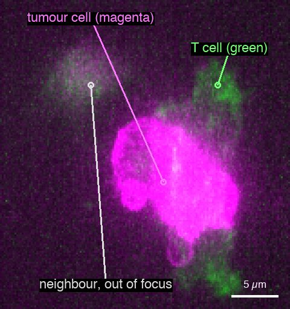
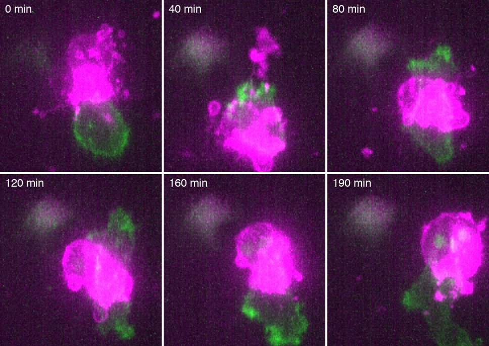
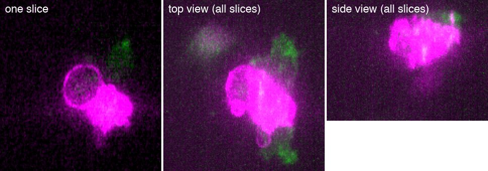
3. Turning images into cells
To measure anything, the computer needs to know which voxels (3D pixels) belong to which cell. The Fei lab trained a neural network to label every voxel, and published these labels, called masks. We started from their masks.
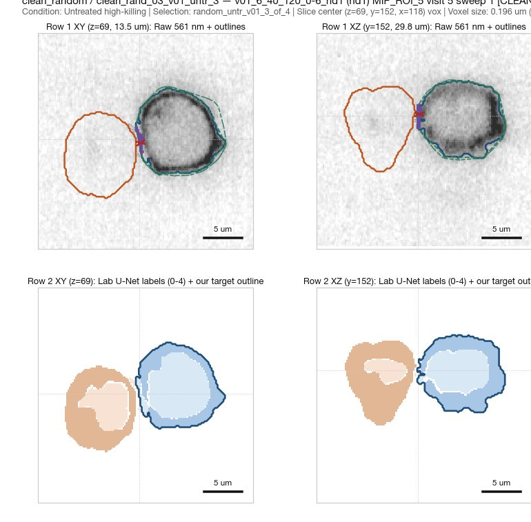
When we looked closely, many masks turned out to be wrong in ways that matter:
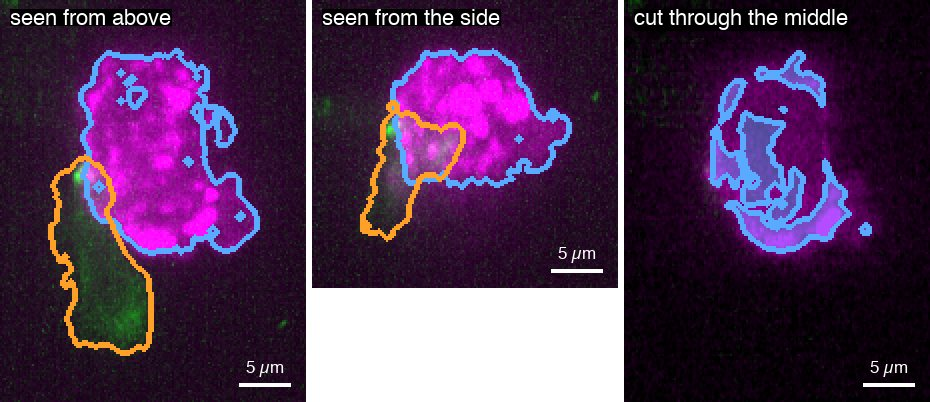
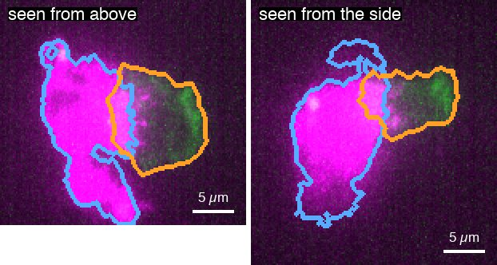
Other failures: a cell split into fragments, a mask extending where there is no cell, and cells cut off at the edge of the image. In a random check of visits that passed our first quality rule, only 4 in 10 masks matched the raw image well.
4. What we measured
Contact area: how much of the T cell touches the target. We reproduced the lab's published numbers exactly (395 of 395 chambers matched; area within 0.5% for 369 of 419 cells). This part is solid.
Cup depth: how deep a dent the T cell makes in the target. It is the distance from the target's "filled-in" outline (its convex hull) down to the contact surface.
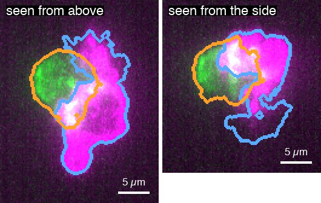
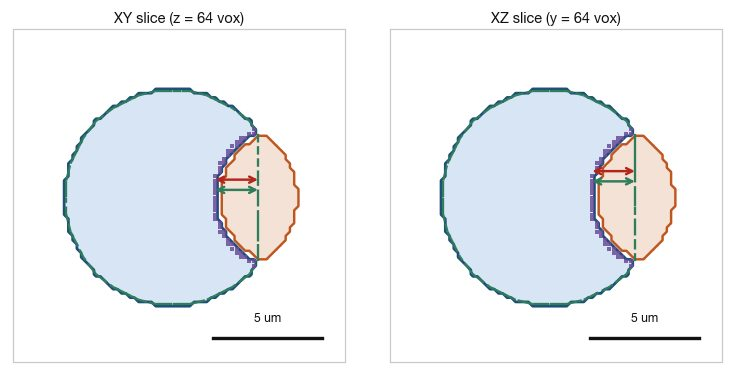
Death: a target counts as killed when the death dye appears inside it and stays. Our kill rates match the paper's per group (52% vs 57.5%, 24% vs 27%, 6% vs 4.5%), but the dye is faint and the calls depend on the threshold.
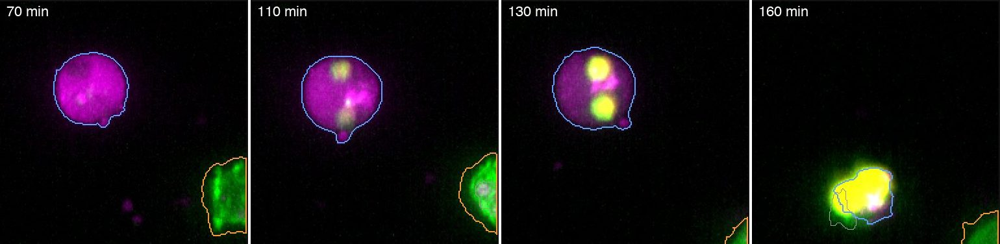
A mechanical model to turn dents into forces was built and tested, but it did not fit the real cells reliably: its cells drifted away from the real ones. It is parked until the measurements are trustworthy.
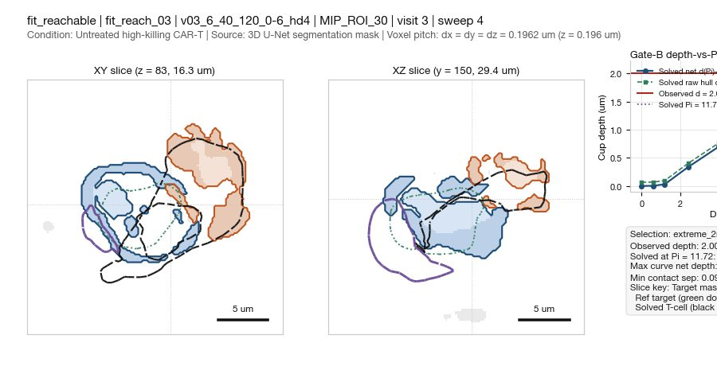
5. What we found, and why it is on hold
| Result | Status |
|---|---|
| Reproduced the lab's contact areas and chamber counts | Solid |
| Deeper dents go with faster killing, within each experiment (about 1.4× per standard deviation) | On hold: bad masks inflate dents, and they become more common just before death, so this could be an artefact |
| High-killing donors do not push in a more focused way than low-killing donors | On hold, and the test was inconclusive anyway |
| Mechanical model | Parked |
| Which chambers count as "killed" | In question: in two of eight chambers we checked, a tumour cell the T cell touched dies but the chamber is labelled "survived" (section 7) |
The lesson: earlier stages were accepted on numbers and reports, without looking at enough real images. Problems in the masks then flowed into every later result.
6. How work is checked now
The project is run like a lab:
- Galleries and movies: every step is shown as real images, random examples plus the most extreme ones, and every image is reviewed. Each gets a recorded verdict (ok / problem / unsure) with a note.
- Lab notebook: dated entries recording what was run, what was looked at and what was decided.
- Data registry: every dataset has a status. Only verified data may be analysed.
- Gates: a stage may feed the next only after its review passes.
So far 256 gallery panels (146 in the first gallery, 110 in the clean-cell gallery) and 340 movie frames from the redrawing pilot (section 7) have been reviewed.
7. Redrawing the cells (in progress)
Instead of trusting the lab's masks, we are redrawing the cells from the raw images and comparing methods side by side on movies of 8 chambers (4 killed, 4 survived). Each round, every frame is reviewed and the problems found are fixed in the next round.
Round 1: four methods on one chamber. These were the lab's masks, the lab's masks repaired, Cellpose-SAM (a general AI cell-outlining model) and PlantSeg (a method built for membrane labels). Cellpose-SAM shattered every cell into pieces, because the tumour label marks only the membrane and the cells look hollow. PlantSeg had a bug that drew the T cell as a striped box.
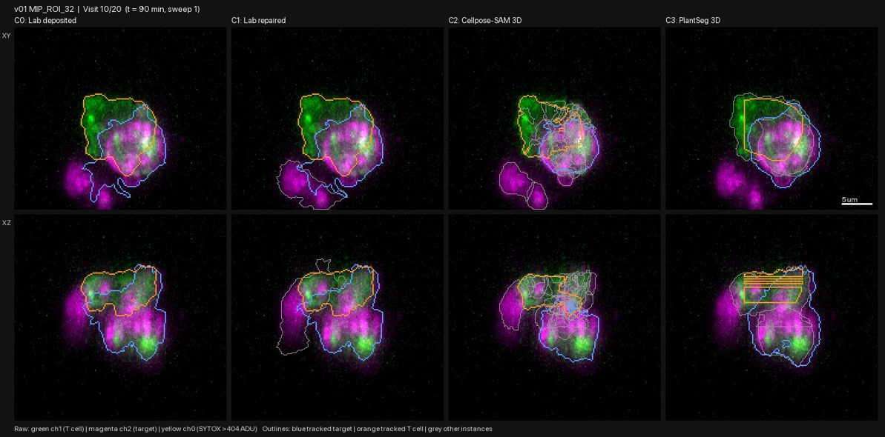
Round 2: all 8 chambers. Repairing the lab's masks cut whole round cells into pieces. More important, the lab's masks drop a tumour cell once it has died: when the cell fills with death dye, it has no outline. PlantSeg keeps it.
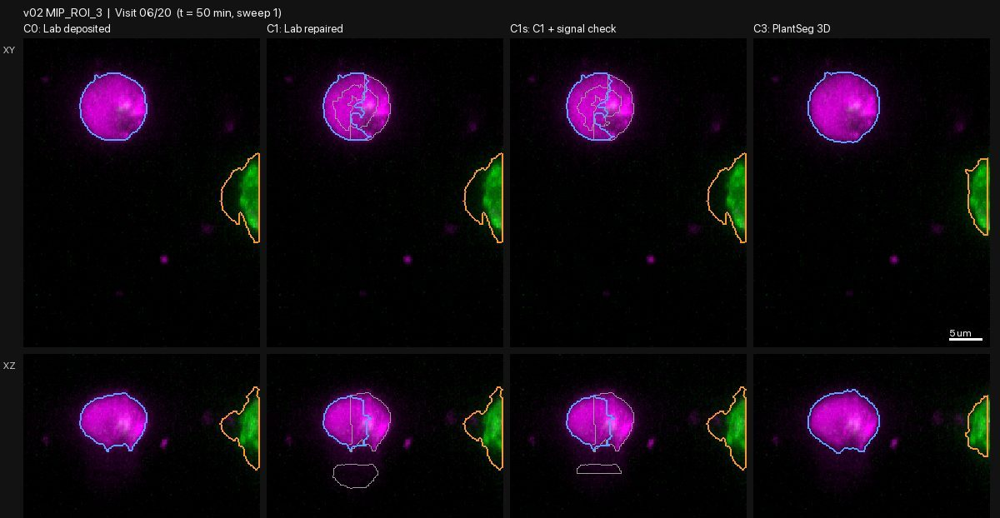
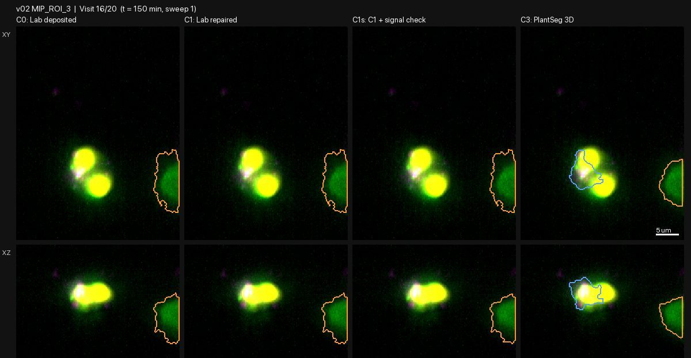
Round 3: an improved PlantSeg (called C4). It knows which colour belongs to which cell type and handles dead cells separately. It fixes the straight-line cuts and stops the T cell from swallowing a dead neighbour.
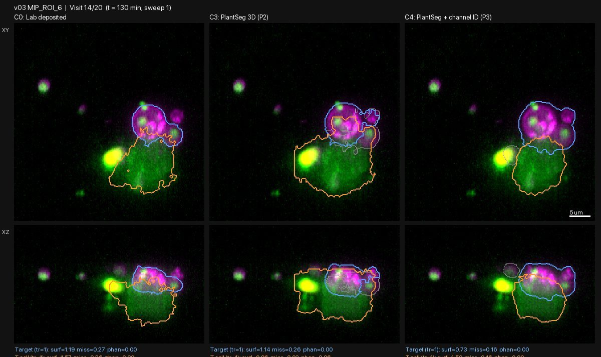
What round 3 showed about killing. In two chambers labelled "survived", the tumour cell the T cell touched does die: - v02 ROI 3: the cell dies about 1.5-2 hours after the T cell leaves. - v03 ROI 30: the cell dies at the very last time point, just after contact ends.
Either the lab's masks missed these deaths, or the lab's definition of a kill excludes them. We are asking the Fei lab.
Still wrong in C4: - touching tumour cells sometimes merge; - small neighbours get attached; - the tracking of which cell is which across time slips.
C4 was tuned on these 8 chambers. It is now being tested, unchanged, on 12 chambers it has never seen.
After that: 1. Fix tracking and the merging of touching cells. 2. Agree on what counts as a kill, then redo the death labels on the new outlines. 3. Scale up by processing raw images as they download, keeping only the cell outlines and summaries, so all 502 chambers fit on one computer. 4. Then, and only then, re-ask the questions in section 5 and return to the mechanical model.
Open questions for the Fei lab: the true spacing between 3D slices (the paper says 0.6 µm, but the images look like about 0.2 µm), and whether deaths seen on only one visit were discarded.
8. Glossary
| Term | Meaning |
|---|---|
| Chamber | One tiny well holding a T cell and target cells; one movie |
| Visit | One time point, every 10 minutes |
| Sweep | One 3D image; about 5 per visit, seconds apart |
| Mask | The computer's labelling of which voxels belong to which cell |
| Projection (top/side view) | A 3D image flattened by keeping the brightest point along each line |
| Cup depth | How deep the T cell dents the target |
| Convex hull | The shape you get by shrink-wrapping a cell; dents show up as gaps under it |
| Donor | The person the T cells came from; 10 donors, 5 high-killing and 5 low-killing |
| Dasatinib | A drug that weakens T-cell pushing; used as a control |
| Digital twin | A 3D model of the cells over time, built from the images |
| PlantSeg | A published method for outlining cells from membrane images; the basis of our current outlines |
| C4 | Our improved version of PlantSeg (round 3 of the pilot) |
| Tracking | Working out which outline is the same cell from one time point to the next |